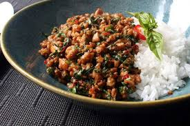

Thai Basil Chicken

Description
Tom Kha Gai is a Thai chicken coconut soup aromatic of lemongrass, lime leaves, and galangal, gives you a refreshing aftertaste with a creamy taste from coconut.
Ingredients for Thai Basil Chicken
- 4 cups coconut milk
- 1 cup chicken stock
- ¼ cup finely chopped cilantro
- 1 stalk lemongrass, tough outer parts removed, thinly sliced
- 1 (2 inch) piece galangal, thinly sliced
- 2 fresh Thai chile peppers, minced
- 6 makrut lime leaves, thinly sliced
- 2 pounds boneless chicken thighs, cut against the grain into bite-sized pieces
- ½ head cabbage, thinly sliced
- 5 limes, juiced
- ¾ teaspoon fish sauce
Instructions
- Bring coconut milk and chicken stock to a boil in a pot over high heat. Reduce heat to medium. Add cilantro, lemongrass, galangal, Thai chile peppers, and lime leaves; simmer for 5 minutes.
- Increase heat to medium-high heat. Add chicken; simmer until no longer pink in the center, about 7 minutes. Stir in cabbage; cook until wilted, about 3 minutes. Remove soup from heat; stir in lime juice and fish sauce.
Back
Next